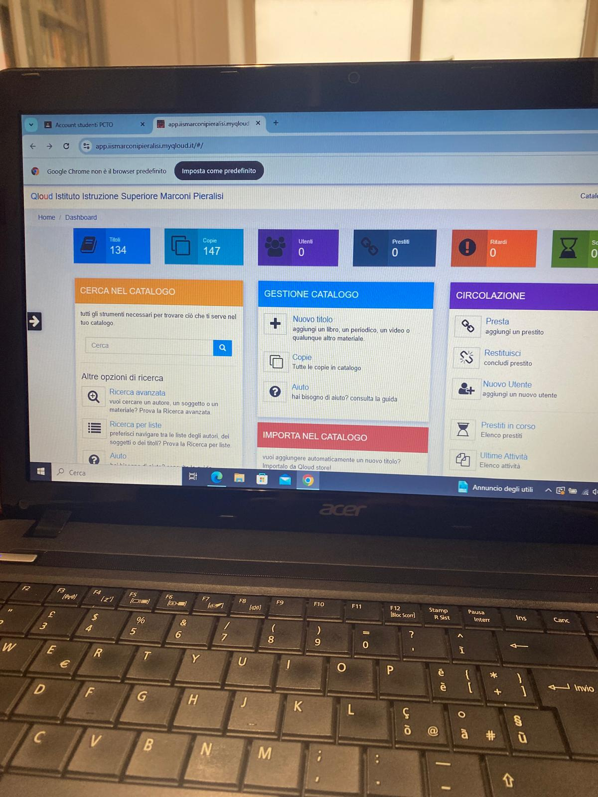
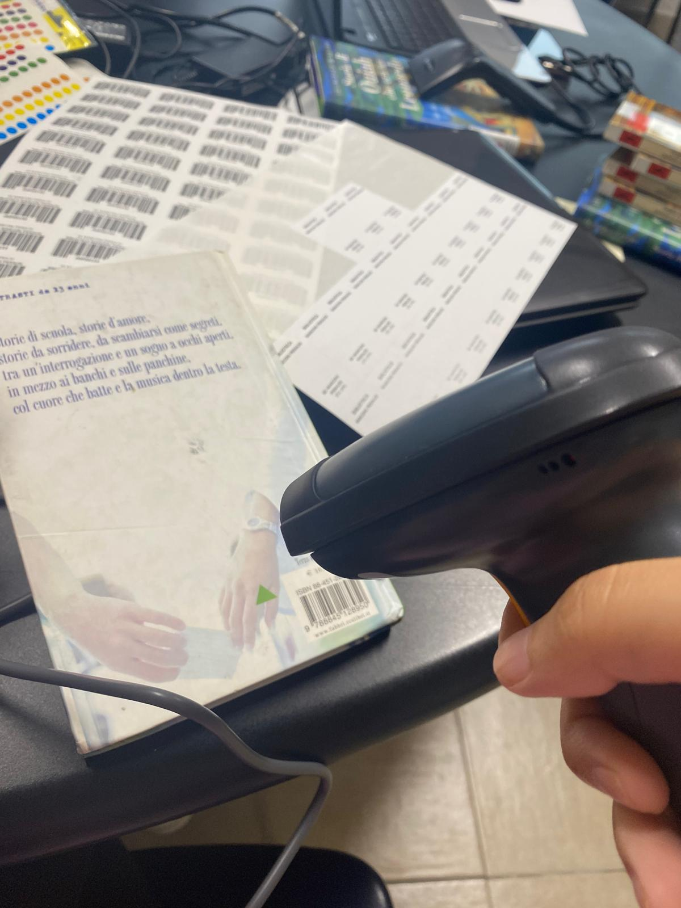
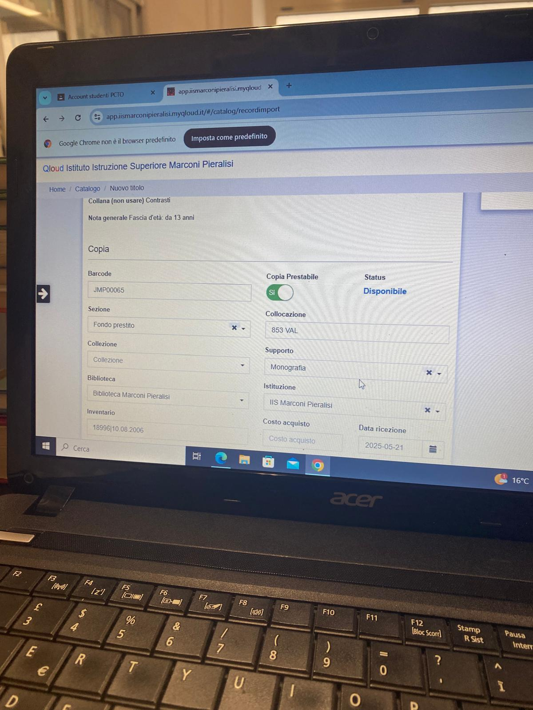

L'esperienza in Biblioteca e le Attività
Nel quarto anno e inizio del quinto anno ho trascorso la mia esperienza di FSL presso la biblioteca, dove ho lavorato per 6 ore al giorno, dalle 8:00 fino alle 14:00, dal lunedì al sabato. Questa esperienza mi ha dato la possibilità di conoscere più da vicino il mondo del lavoro e capire come funziona un’organizzazione reale aperta al pubblico.
Nel corso dello stage ho svolto diverse attività pratiche, come catalogare i libri all’interno del sito web della biblioteca e organizzarli fisicamente sugli scaffali, suddividendoli in base ai diversi generi letterari.

Riflessioni e Crescita Personale
L’esperienza è stata molto organizzativa e concreta: gran parte del tempo veniva dedicata ad attività di precisione e gestione dei volumi. Questo progetto mi ha permesso di crescere sia come persona che come studente. Alcuni compiti legati alla catalogazione potevano risultare ripetitivi e richiedevano soprattutto molta attenzione, precisione e pazienza, caratteristiche importanti ma che a lungo andare potevano diventare faticose. Nonostante questo, ho cercato comunque di impegnarmi seriamente e di svolgere ogni compito con la massima cura.

Ritmi di Lavoro e Teamworking
Una delle difficoltà principali è stata anche l’organizzazione dei tempi e dei ritmi quotidiani: l'orario di sei giorni a settimana, compreso il sabato, richiedeva costanza e a fine giornata la stanchezza si faceva sentire.
Tuttavia, durante il lavoro ho imparato a parlare e collaborare con persone nuove, migliorando sensibilmente il mio modo di comunicare e di lavorare insieme agli altri. È stata un'esperienza decisamente utile per capire come ci si comporta in un vero lavoro di squadra, aiutandomi a sviluppare un maggiore senso di responsabilità, autonomia e capacità di adattamento. Considero questo stage molto utile per la mia crescita personale e professionale.

Competenze Sviluppate
- Catalogazione Dati Web
- Team Working
- Comunicazione Interpersonale
- Organizzazione Logistica
- Pazienza e Precisione
- Sicurezza sul Lavoro